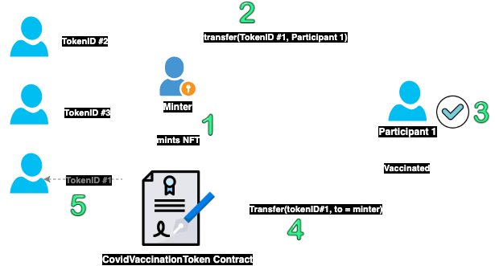

Deploying a Contract Using Truffle¶
Introduction¶
Truffle is a widely used development environment and testing framework for Ethereum smart contracts. In this tutorial, we will show by example how to use Truffle with the Aurora Testnet.
This tutorial assumes that you are familiar with Truffle and the non-fungible tokens (NFT) concept. For more details about the non-fungible token standard, please refer to the ERC-721 Non-Fungible Token Standard specification.
NFT Example¶
This example is originally forked from the OpenZeppelin examples. However, the code has been changed to fit the use case of this tutorial. The use case is about how to deploy and manage the life cycle of a simple COVID-19 vaccine NFT token 💊💊 using Truffle on the Aurora Testnet.

-
The minter address (which is managed by the vaccination program manager) can distribute (mint) the vaccine tickets (NFT tokens 💊💊💊) to the people who are part of the vaccination program.
-
When participants receive the tokens 💊, they can get access to the vaccine by spending the NFT token.
-
This means either burning the NFT token or sending it back to the minter address.
-
If the participant chooses to send it back then the minter can redistribute that token 🎫 to another participant in the line.
-
Then the new participant will have access to the same vaccine token that has been used by the previous participant.
Installing Prerequisites¶
This tutorial assumes that you have Node.js 12+ and Yarn. Please refer to the
Yarn installation how-to if you
don't yet have the yarn command installed locally.
To install the prerequisite packages, clone the examples repository and then run
yarn:
Install Truffle¶
npm install -g truffle
Install dependencies¶
git clone https://github.com/aurora-is-near/aurora-examples.git
cd aurora-examples/truffle/erc721-example/
yarn
Connecting Truffle to Aurora¶
Export your MNEMONIC as follows:
export MNEMONIC='YOUR MNEMONIC HERE'
Now in truffle-config.js, you will need to change the from address as shown
below in the aurora network section:
...
aurora: {
provider: () => setupWallet('https://testnet.aurora.dev'),
network_id: 0x4e454153,
gas: 10000000,
from: '0x6A33382de9f73B846878a57500d055B981229ac4' // CHANGE THIS ADDRESS
},
The truffle-config.js configuration will pick up your MNEMONIC environment
variable and recover the address that will be used for sending and signing
transactions on the Aurora network.
Deploying the Contract¶
To deploy the CovidVaccineToken contract, you can run the yarn command as
follows:
yarn deploy:aurora
....
_deploy_contracts.js
=====================
Deploying 'CovidVaccineToken'
-----------------------------
> transaction hash: 0x282012c791d65d0ce2fd1fd9fcc41179dba5bd06c3b02e31e53dbe9cc8af62c1
> Blocks: 7 Seconds: 5
> contract address: 0x3635D999d8CdA2fAf304b390fb26a9c2f364dFbd
> block number: 49151611
> block timestamp: 1622034185
> account: 0x6A33382de9f73B846878a57500d055B981229ac4
> balance: 0
> gas used: 2576274 (0x274f92)
> gas price: 20 gwei
> value sent: 0 ETH
> total cost: 0.05152548 ETH
....
Playing with the Truffle Console¶
Now you can test the flow as mentioned in the NFT Example section:
Mint tokens¶
The minter mints and transfers NFT tokens for the vaccine program participant.
In this example, the new participant address is
accounts[1] and the minter address is accounts[0].
Please make sure that you are using the same deployer address as a minter
address, otherwise the mint transaction will revert.
% truffle console --network aurora
truffle(aurora)> const cvt = await CovidVaccineToken.deployed()
truffle(aurora)> const minter = accounts[0]
truffle(aurora)> const participant = accounts[1]
truffle(aurora)> await cvt.minter() == minter
true
truffle(aurora)> await cvt.mint(participant, {from: minter})
You should notice that none of the participants are allowed to transfer their NFT tokens to anyone except back to the minter.
So let's try to use any participant address to validate this. To do that, change
the value of from to accounts[1], so that the sender will be the first
participant (e.g., the participant address
0x2531a4D108619a20ACeE88C4354a50e9aC48ecfe).
In the Truffle console:
truffle(aurora)> await cvt.safeTransferFrom(participant, accounts[2], 1, {from: participant})
Uncaught Error: execution reverted:
...
reason: 'Invalid Transfer',
hijackedStack: 'Error: execution reverted:\n'
This is exactly the same error message we have in our NFT contract in
safeTransferFrom:
function safeTransferFrom(
address from,
address to,
uint256 tokenId
)
public
virtual
override
{
require(
minter == msg.sender || to == minter,
'Invalid Transfer'
);
safeTransferFrom(from, to, tokenId, "");
}
Transfer tokens¶
Participants can transfer the token to the minter after receiving the vaccine.
As shown below, a participant can only send the NFT token if the receiver for
this token is the minter (accounts[0]).
truffle(aurora)> const tokenID = 1
truffle(aurora)> await cvt.ownerOf(tokenID) == participant
true
truffle(aurora)> await cvt.safeTransferFrom(participant, minter, tokenID, {from: participant})
truffle(aurora)> await cvt.ownerOf(tokenID) == minter
true
Burn tokens¶
This is an alternative scenario for the NFT token lifecycle. Instead of
transferring the token back to the minter, the participant can decide to burn the
NFT token by calling the burn function:
truffle(aurora)> await cvt.burn(1, {from: participant}) // 1 is the tokenID
Redistribute tokens¶
Finally, the minter can send the same token (if not burnt) to a new participant in the line:
truffle(aurora)> await cvt.safeTransferFrom(minter, accounts[2], 1, {from: minter})
truffle(aurora)> await cvt.ownerOf(1) == accounts[2]
true
Summary¶
In this simple tutorial, we deployed an NFT contract to the Aurora Testnet using Truffle and interacted with the contract's functions.